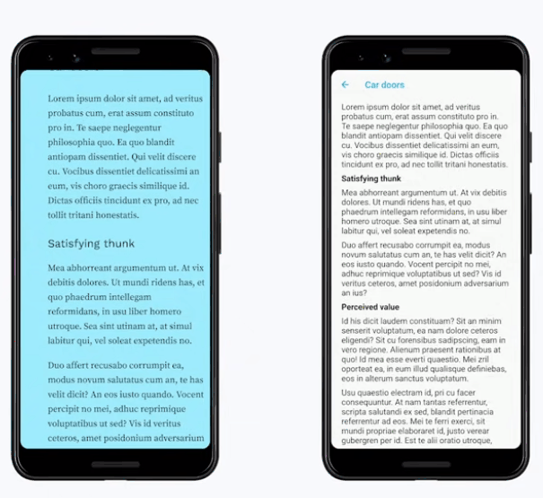

这篇文章主要总结了FlutterEngage里的这个talk:
(这个talk的名字的中文翻译挺牛的: "小事一桩：成为开发和设计俱佳的神级人物")
talk里代码地址在: https://github.com/filiph/little_things
这个talk还是挺有意思的, 介绍了如何提升App的设计细节从而获得更高的 "Perceived value": 有时候app本身的功能性和技术性是一方面, 但是呈现给用户的感觉却有可能因为一点点细节而完全不同. 这一点我之前不太重视, 细想一下确实有道理.
1. White space
多使用padding添加空隙和留白, 体现一种高级感~ 结合Flutter的hot reload可以快的实验 找到合适的padding.
2. Typography
换个好看的字体也可以让应用看起来非常高级.
GoogleFont配合hot reload来选择好的字体
3. Color
给app添加特别的配色.
可以从网上找一些配色方案(color palette), 比如:
- https://coolors.co/palettes/trending
- https://undesign.learn.uno/colors/
把选好的ColorPalette放在MaterialApp.theme里头: https://github.com/filiph/little_things/blob/main/lib/main.dart#L27-L55
4. Iconography
意思就是鼓励多给app多加一些图片/图标.
Filip的例子他用到了BoxDecoration(可以配置gradient以及image): https://github.com/filiph/little_things/blob/main/lib/src/list.dart#L18-L32
Container(
decoration: BoxDecoration(
gradient: LinearGradient(
colors: [
Color(0xFF96E3FF),
Color(0xFF9EECFF),
Color(0xFF9FEBFF),
Color(0xFF9FEEFF),
Color(0xFF9FECFF),
],
),
image: DecorationImage(
image: AssetImage('assets/meditation.jpg'),
alignment: Alignment.bottomCenter,
),
),
child: Scaffold(/*...*/),
)
5. Animation
动画也可以很大提升用户对app的评价.
默认animation的curve是linear, 一般这种curve都会让人感觉很不自然. 可以尝试一下easeIn/easeOut这种.
另外还可以同时提供多个animation (slideTransition / resize / text 等等), 这时候如果所有animation一起跑其实会很乱, 我们应该用 "Staggered Animation", 就是一个animation接另一个animation.
用curve: Interval(0.2, 0.6), 可以让这个animation在整个animation(parent)的20%~60%的时间段运行:

ScaleTransition(
scale: CurvedAnimation(
curve: Interval(
0.2,
0.6,
curve: Curves.elasticOut,
),
parent: _controller,
),
child: /*...*/,
)
这里Filip自己实现了一个显示文字的widget(TrackedOutText), cf. https://github.com/filiph/little_things/blob/main/lib/src/congrats.dart
最终效果对比

App质感的提升还是挺明显的!
另外原视频的简介里也提供了一些UI设计的视频可以参考入门.
Disqus 留言